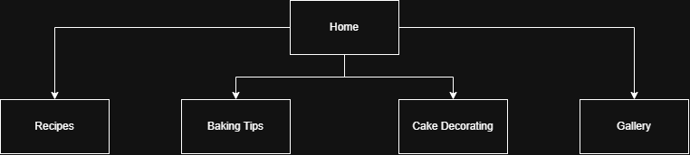
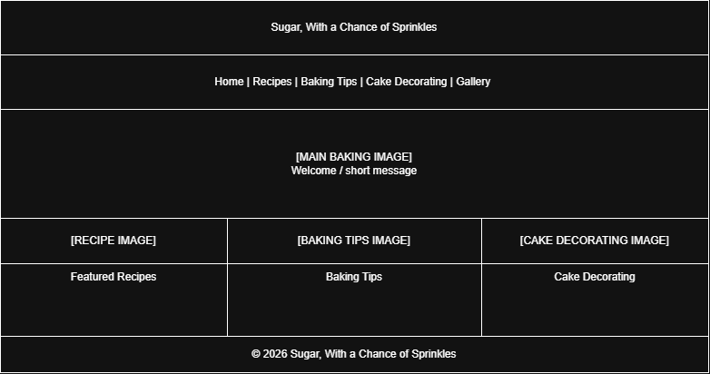

For my final project, I will create a baking and cake decorating website. The website will provide recipes, baking tips, and cake decorating ideas for people who enjoy baking at home.
The goal of the website is to provide helpful and easy-to-understand information for beginner bakers. The intended audience is people who want to learn more about baking and decorating cakes at home.
The website content will be organized into five main pages: Home, Recipes, Baking Tips, Cake Decorating, and Gallery. The Home page will introduce the website and provide navigation to the other pages. Each page will focus on a different type of baking content, making it easy for users to find the information they are looking for.
The website will include subtopics such as cake and dessert recipes, baking techniques, decorating tutuorials, and baking inspiration.
Each page will use a consistent layout with the website title at the top and a navigation menu below it. The navigation menu will include links to Home, Recipes, Baking Tips, Cake Decorating, and Gallery. The main content will appear below the navigation, with a footer at the bottom of each page.

The wireframe below shows the planned layout for the home page.

W3Schools will be used as a reference for HTML and CSS while creating the structure and visual design for my baking and cake decorating website.
MDN Web Docs will be used as an additional reference for HTML and CSS when developing the navigation, images, and page layouts for my final website.